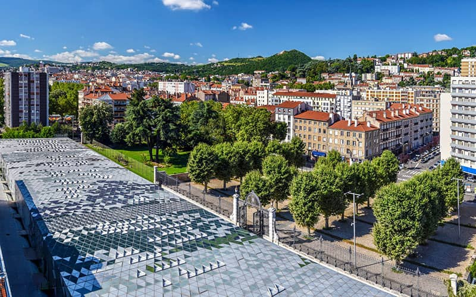
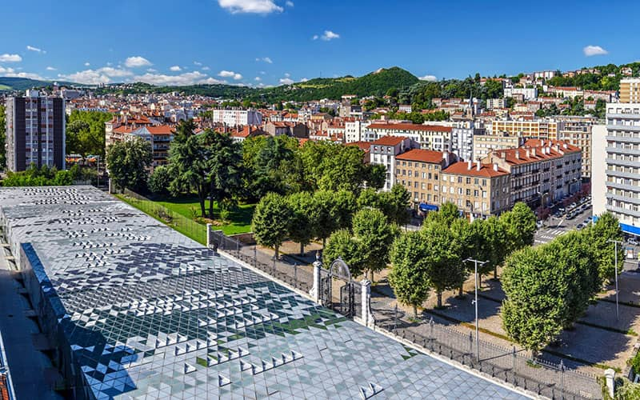

Developpeur Web
Ce site a pour but de rassembler diverses éléments réutilisables.
C'est aussi une vitrine pour montrer mes idées et mes réalisations.
J'utilise le SASS afin d'avoir un fichier pour chaque composant.
Il y a bien-sûr du HTML/CSS, mais aussi du JS et du PHP
Effet parallax
L'image de fond ne défile pas en même temps que le bloc.
Pour Cela la position du background-image est en fixed
L'effet diagonale du bloc est obtenu grace à une transformation de type SkewY.
Mais firefox ne semble pas gérer le background-image:fixed et le SkewY ensembles.
Si vous voulez profiter pleinement de l'effet, je vous déconseille d'utiliser firefox.

Utilisation des sprites
Le personnage est sous forme de sprites pour simuler son déplacement.
Tous les décors sont sous forme d'animations CSS.

Utilisation des grilles
On utilise un affichage en display:grid; avec une rotaion de 45°
Grâce aux pseudos classes ::before et ::after, on inverse la rotation des background-image.
Je vous laisse découvrir les efftes de hover.
Perspective CSS
Les images utilisent la propriété CSS persperctive et les transformations
Un script JS permet de faire varier la perspective au hover selon le déplacement de la souris

 



Utilisation des API
Les requêtes AJAX permettent d'obtenir des informations de 2 API différentes
D'abord la carte grâce l'API leaflet.
Ensuite, lorsqu'on clique sur la carte qu'on vient de générer, la météo grâce à l'API prevision-meteo.ch.
Le tout est mis en forme grace aux Flexbox
Météo à 5 jours
selectionnez votre ville en cliquant sur la map